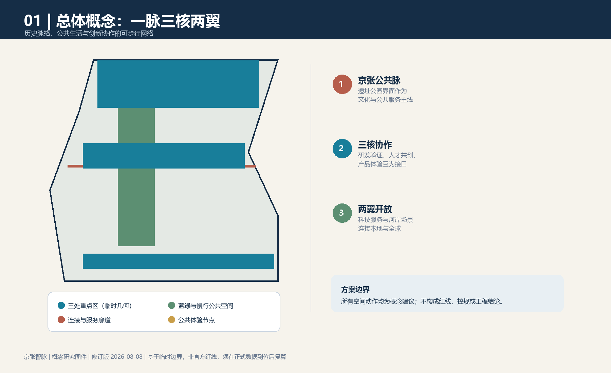
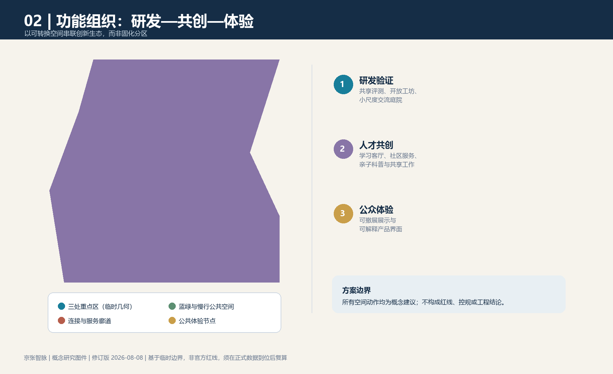
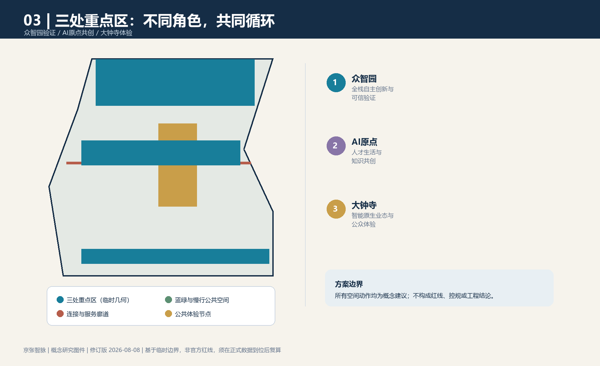
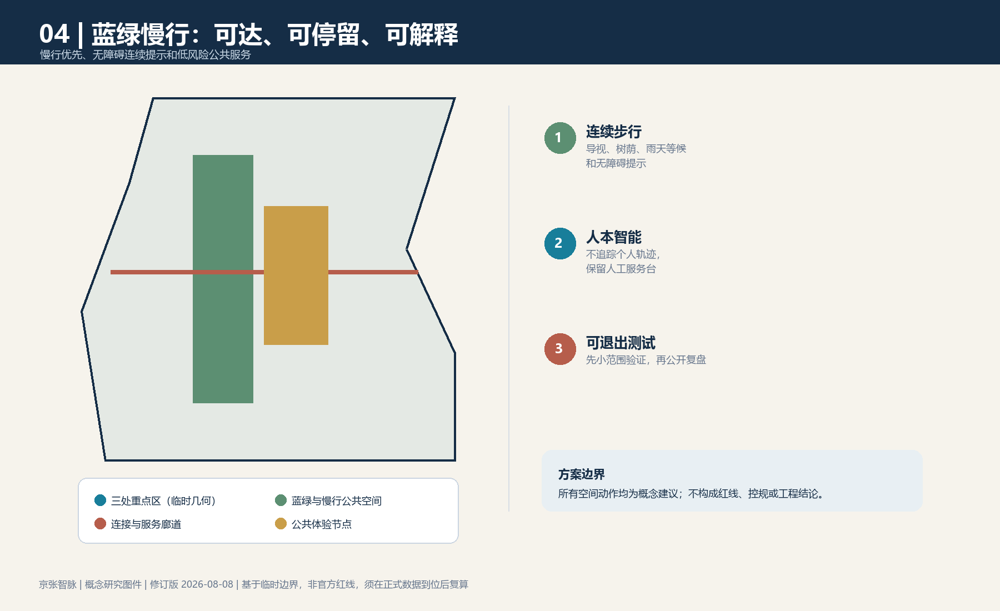

一脉三核两翼
众智园
全栈研发、可信验证与开源协作。
AI原点社区
人才生活、知识共创与公共学习。
大钟寺
可解释体验、转化展示与城市服务。
两翼
科技服务与小月河场景赋能，连接本地与全球。
空间图件




十张场景卡
无障碍导览
多语文化叙事
社区服务预约
低碳步行建议
开源问题诊疗
创业合规清单
儿童科学共创
可解释展陈
夜间安心回家
城市问题众包
总览地图与三层范围
总览地图以临时边界表达统筹研究、总体设计与重点区域的工作关系；重点区域、用地分区、交通慢行、蓝绿公共空间、建筑与更新项目均为概念层信息，等待正式资料复核。
重点区域
众智园、AI原点社区、大钟寺三核协作。
用地分区
研发、共创、体验与公共服务的可转换组织。
交通慢行
步行优先、无障碍连续提示和站点接驳。
蓝绿公共空间
休憩、降温、雨洪科普和开放交流。
建筑
图层仅表达概念基底，不推定保留、改造或建设结论。
更新项目
以可逆导视、展陈、服务台和开放日作为近期验证。
AI 场景、核心指标与任务覆盖
任务覆盖：总体概念、生态、场景、公共空间、文化叙事与长期运营六项任务均在方案正文、图件和结构化矩阵中对应呈现。
核心指标｜方案范围面积
11412825.386 sqm（临时边界复算）
核心指标｜绿地比例
12.34%
核心指标｜公共空间比例
7.33%
自检状态、来源与假设
自检状态：使用仓库脚本进行结构、空间、视觉和专业证据检查。来源：主办方公告、智能体任务书、站点资料包、来源登记表及临时边界文件。假设：官方边界、权属、控规、交通、市政、消防和文保条件尚未完整公开；相关空间和指标须在正式资料到位后复算。